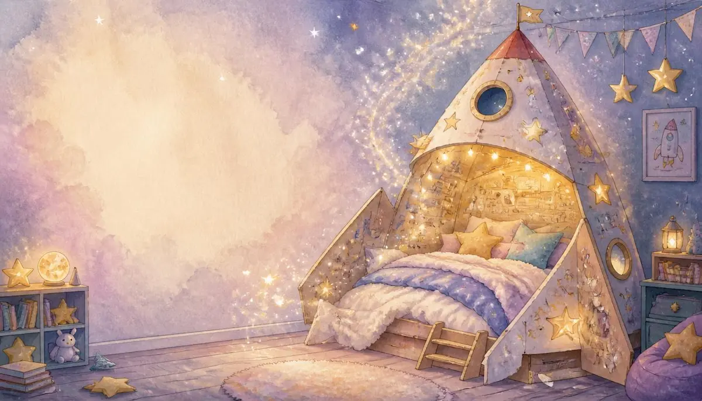
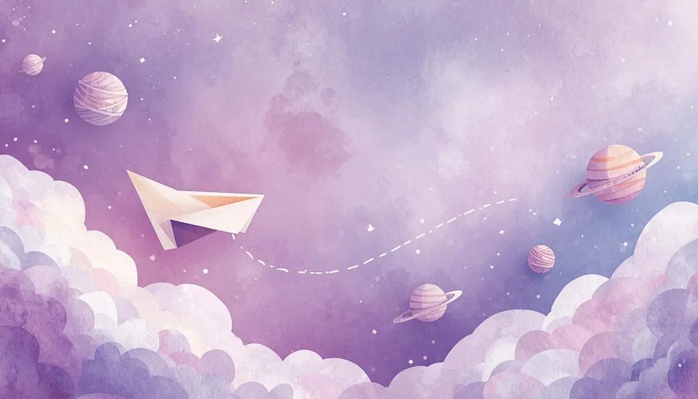
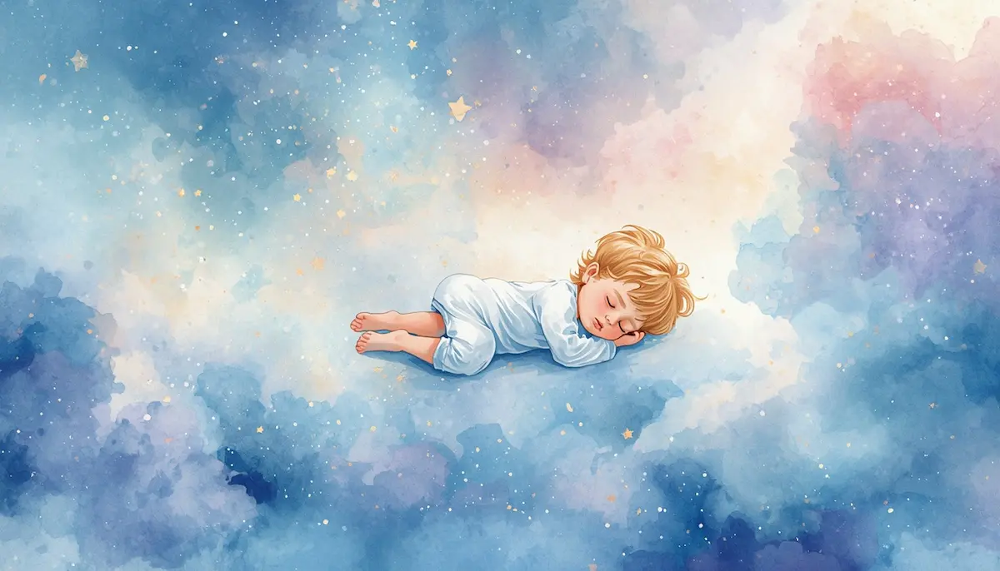
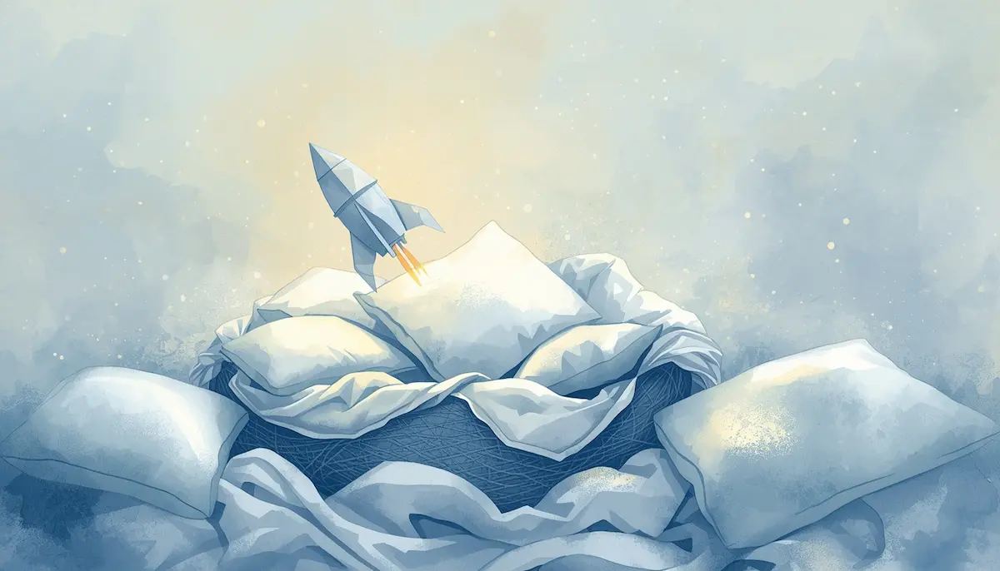
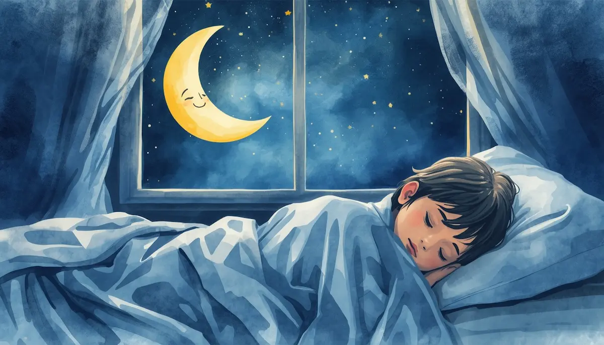

7. El pequeño astronauta de papel

Introducción: Despegue desde la cama
Hola, pequeño astronauta. Es momento de prepararnos para una misión muy especial hacia el país de los sueños. Tu cama no es solo una cama; ahora es la cabina de una nave mágica hecha de tus mantas y almohadas más suaves. Ponte muy cómodo y siente cómo tu cuerpo se hunde en el colchón, como si fuera una nube blandita.
Vamos a encender los motores con nuestra respiración mágica. Pon tus manos en la tripita y siente cómo se infla como un globo de luz cuando el aire entra por tu nariz. Aguanta ese aire un segundo... y suéltalo muy despacio por la boca, dejando que tu cuerpo se vuelva flojo y tranquilo.

El viaje por la Vía Láctea de algodón
Ahora, nuestra nave de papel se eleva suavemente. Mira por la ventana: el espacio no es oscuro ni frío, es un océano inmenso de nubes de colores pastel. Flotamos sobre planetas que parecen ovillos de lana suave y estrellas que parpadean al ritmo de los latidos de tu corazón.
Sigue el ritmo de este viaje: al elevarte sobre una estrella dorada, inspira luz... y al bajar por un tobogán de luz de luna, exhala toda la tensión.
Todo es paz aquí arriba. Las estrellas te cuidan y te dicen en silencio que eres valiente y que estás a salvo.

Flotando en ingravidez
En este lugar mágico, tu cuerpo ya no pesa nada. Sientes tus brazos y tus piernas ligeros, como si estuvieras flotando en agua tibia. Relaja tu carita, suelta tu mandíbula y deja que tus ojos descansen bajo sus párpados.
Si algún pensamiento inquieto aparece, no le hagas caso. Míralo como si fuera un cometa lejano que pasa de largo por el cielo sin hacer ningún ruido. Tú solo sigue flotando, sintiendo cómo el silencio del espacio te abraza con mucho amor.

Cierre: Aterrizaje en el planeta del sueño
Nuestra nave de papel aterriza ahora con mucha delicadeza de vuelta en el nido de tu cama. Ya no necesitas viajar más, porque has llegado al taller donde se fabrica tu mañana. Guarda el brillo de las estrellas en tu pecho para que te acompañe toda la noche. Estás seguro, eres amado y este es tu momento de paz.

Buenas noches, pequeño astronauta. Descansa profundamente.